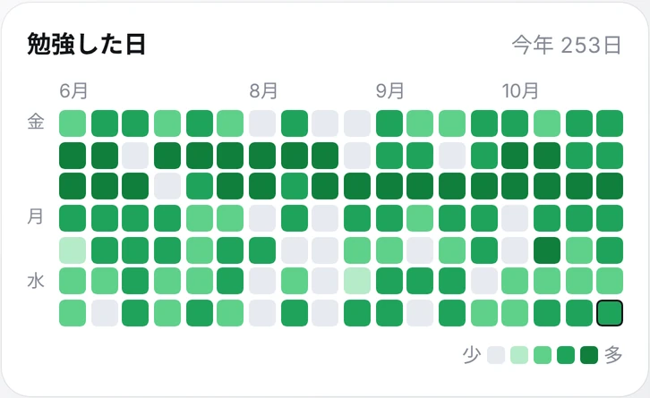
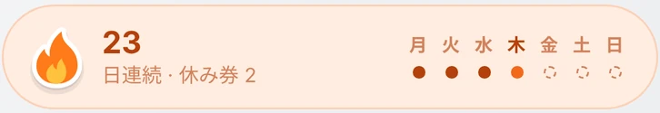

時間割
予定の時間に、
お知らせが届く。
時間割に入れた予定は、1日の1本の線にならぶ。終わったところは実線、これからは点線、いまの時刻に赤い点。このページの左の線も、同じ見方。
予定の時刻になると、お知らせが届く。模試や入試の日は「締切」に入れておくと、あと何日かと ToDo の進みが見える。

時間割
時間割に入れた予定は、1日の1本の線にならぶ。終わったところは実線、これからは点線、いまの時刻に赤い点。このページの左の線も、同じ見方。
予定の時刻になると、お知らせが届く。模試や入試の日は「締切」に入れておくと、あと何日かと ToDo の進みが見える。
タイマー
画面の下のバーに、いまの予定がいつも出ている。「勉強を開始」を1回押すだけ。予定がない時間は「自習」で始めて、あとで科目に仕分ける。
見本です。このページの中だけで動いて、どこにも保存しません。

記録
終わったら ✓。投稿を書くように、ひとことメモを残せる（140字まで）。時間は5分ずつ直せる。タイムラインにも出すかは、そのつど選ぶ。
0時をまたいだ勉強は、日ごとに分けて記録する。

続けた日数とバッジ
数学が終わって、今日は2時間45分。勉強した日はマスが緑になり、長くやった日ほど濃くなる。



友だち
いま勉強中の友だちが、科目と時間といっしょに並ぶ。だれかが始めたら、「一緒に始める」をひと押し。同じ志望校の人でしぼったり、グループで集まったりもできる。
勉強中を見せる相手は、設定で決められる。
下のバーで勉強を始めると、あなたの窓にも灯りがつく。

使い方
日にちと時間と科目を入れておく。
お知らせが来たら、下のバーから1回。
ひとことは書かなくてもいい。時間はそのまま今日の記録に。
はじめは、勉強中の表示（ニックネーム・科目・時間）は全員に、メッセージはグループのメンバーまでに届きます。どちらも設定で、いつでも変えられます。
| 設定 | できること | はじめは |
|---|---|---|
| 勉強中を見せる相手 | 全員／フォロワーだけ／見せない | 全員 |
| 順位を見せる | ランキングに出す／出さない（出さなくても自分の順位は見られる） | 出す |
| メッセージを受け取る相手 | フォロー中の人／グループのメンバーまで／全員 | グループのメンバーまで |
| ブロック・通報 | 名前を押すと、どこからでもできる。ブロックした人は出てこない | — |
| 13歳未満 | 保護者の同意を得ているか、はじめにたずねる | — |
| 記録の保存 | この iPhone の中に保存。圏外でも記録できる | — |
はじめに、保護者の同意を得ているかをたずねます。「保護者の同意を得ています」にチェックしないと、先へ進めません。
記録は、この iPhone の中に保存されます。勉強中の表示（ニックネーム・科目・時間）と順位は、設定で決めた範囲の人に見えます。設定から、書き出しや、アカウントとデータの削除ができます。